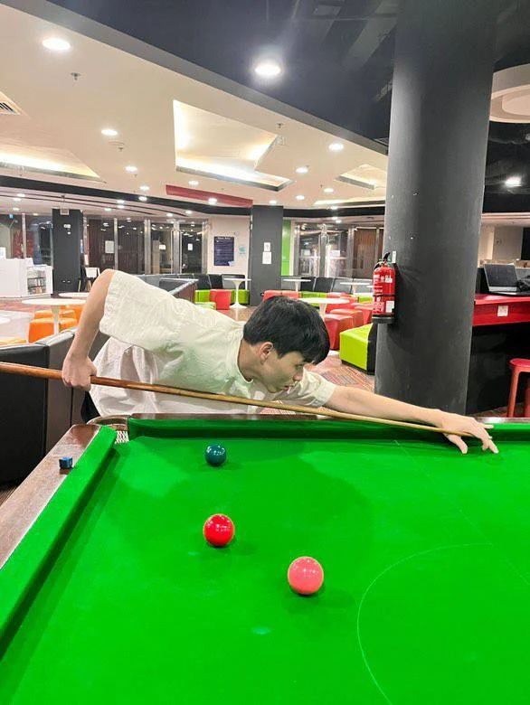
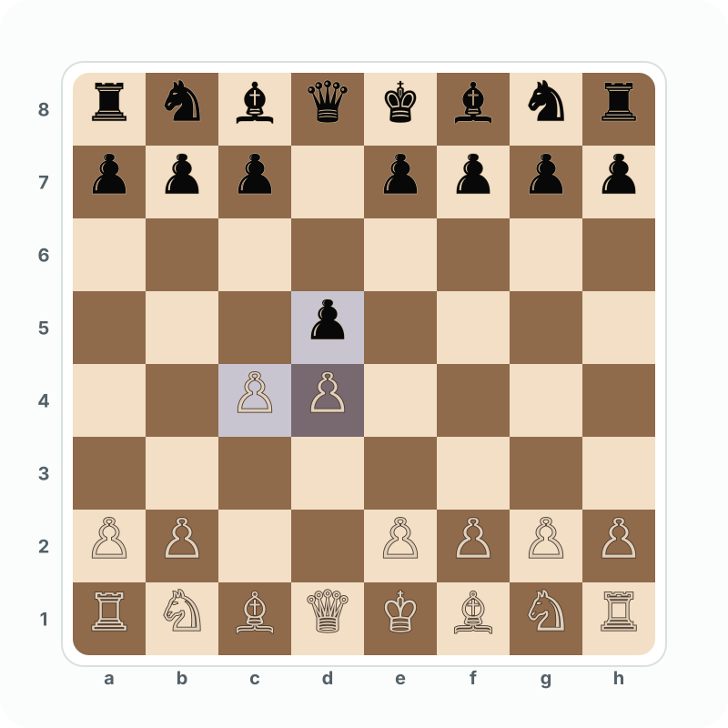
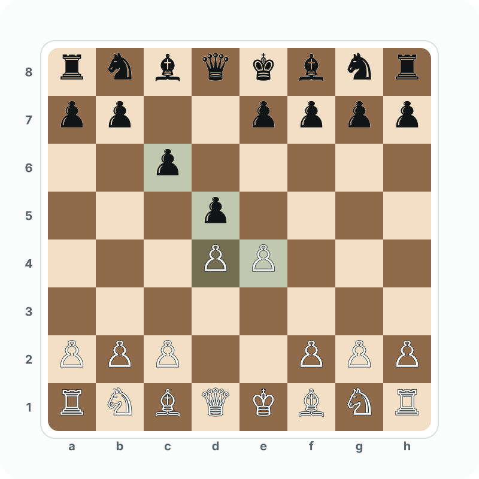

Cue Sports SnookerPrecision, angle control, and a calm rhythm away from the desk.
Contact
Based in Singapore, with research experience across Singapore and Germany. Fluent in English and Chinese.

Beyond Research
A small note on the slower games and habits that keep my thinking sharp outside research.
I like Queen's Gambit positions with White and the Caro-Kann Defense with Black.


Loading public Chess.com ratings.

Cue Sports SnookerPrecision, angle control, and a calm rhythm away from the desk.